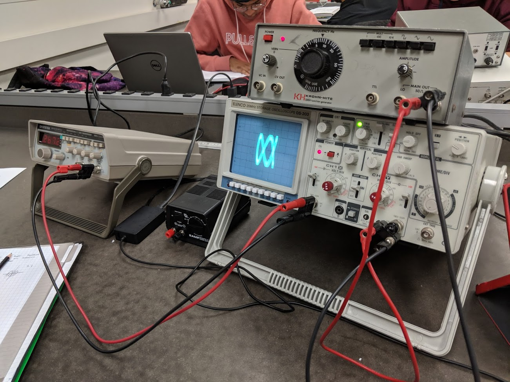

Dan Waxman
a great story has a beginning, middle & end
but not necessarily in that order
we are all great stories
- Phil Kaye
a great story has a beginning, middle & end
but not necessarily in that order
we are all great stories
- Phil Kaye
There are tons of really cool ideas that pop up in intro physics courses that aren't explored much: Noether's Theorem, Fourier analysis, Brownian motion, and more. Among these cool little topics are Lissajous curves.
Lissajous curves are the parametric plotting of two simple harmonic oscillators, or just the parametric mapping of two sinusoids. Explicitly, we can write this as a system \[\begin{cases} x_1(t) = \sin(\omega_1 t + \varphi) \\ x_2(t) = \sin(\omega_2 t),\end{cases}\] Where \(\varphi\) is the relative phase difference between the two oscillators. They usually show up while learning how to use oscilloscopes and function generators, and you can have a little fun tweaking relative frequencies to get different shapes. Here's the picture of when I made some Lissajous curves in intro physics.

At Stony Brook, intro labs have terribly outdated equipment which can make carefully tuning knobs difficult; and universally, intro labs have finite time so you can only tweak so much. This means you can only play around with changing parameters for so long before being kicked out, and so when I was in intro physics I wrote some code to generate Lissajous curves, and show them "moving through time". I didn't use any animation library for it, and so the code kind of sucks. Consequently, I decided to rewrite the animation to put on this page.
When first learning about them, there were some mysterious properties that people talk about but don't really tell you the background of, so I wanted to write down some of them here as a note to my former self. The most famous of these properties is that a Lissajous curve is algebraically closed if and only if \(\omega_1\) and \(\omega_2\) are commensurable, i.e. \(\frac{\omega_1}{\omega_2}\) is rational. I wasn't sure how you prove this for a while back then, but the answer is surprisingly simple.
In classical mechanics, we have this idea called Newton's Law of Determinacy, which says a system only depends on its initial position and velocity. We mathematically justify this by saying force is a function of position and velocity only, and so Newton's Second Law, \(F = \frac{d}{dt} (m\dot{x})\), sets up a second order differential equation. This means we can solve the system uniquely with two initial conditions. Determinacy is, of course, false in general; it's only true when we're neglecting higher order terms of the Lagrangian like we do in classical mechanics. And moreover, even if all of our equations were just second order, Heisenberg's uncertainty principle would come in and ruin the fun if we wanted to work on quantum scales. Nonetheless, as simple harmonic oscillators provide a first order force, this principle is valid here.
Applying determinacy, we find that algebraic closure is equivalent to finding some \(\delta t\) such that \[\begin{cases} x_1(t_0) = x_1(t_0 + \delta t) \\ \dot{x}_1(t_0) = \dot{x}_1(t_0 + \delta t) \\ x_2(t_0) = x_2(t_0 + \delta t) \\ \dot{x}_2(t_0) = \dot{x}_2(t_0 + \delta t).\end{cases}\] One nice part about the sinusoidal functions is that they're equal precisely when their derivatives are equal. This makes life easier by reducing the solution to finding \(\delta t\) where \[\begin{cases} x_1(t_0) = x_1(t_0 + \delta t) \\ x_2(t_0) = x_2(t_0 + \delta t).\end{cases}\]
To solve this, let's fully write out the problem using the definition of \(x_1(t)\) and \(x_2(t)\). \[\begin{cases} \sin(\omega_1 t_0 + \varphi) = \sin\left[\omega_1 (t_0 + \delta t) + \varphi\right] \\ \sin(\omega_2 t_0) = \sin\left[\omega_2 (t_0 + \delta t)\right].\end{cases}\] From here it's easy to see that we want \[\begin{cases} \omega_1 \delta t = 2n\pi \\ \omega_2 \delta t = 2m\pi,\end{cases}\] for integers \(n\) and \(m\). Algebraic closure is then equivalent to \[\frac{\omega_1}{\omega_2} = \frac{n}{m}\] for integers \(n\), \(m\) --- in other words, \(\omega_1\) and \(\omega_2\) being commensurable.
I'll get around to writing this part soon... But something something Lioville Theorem something something Poincare Recurrence.